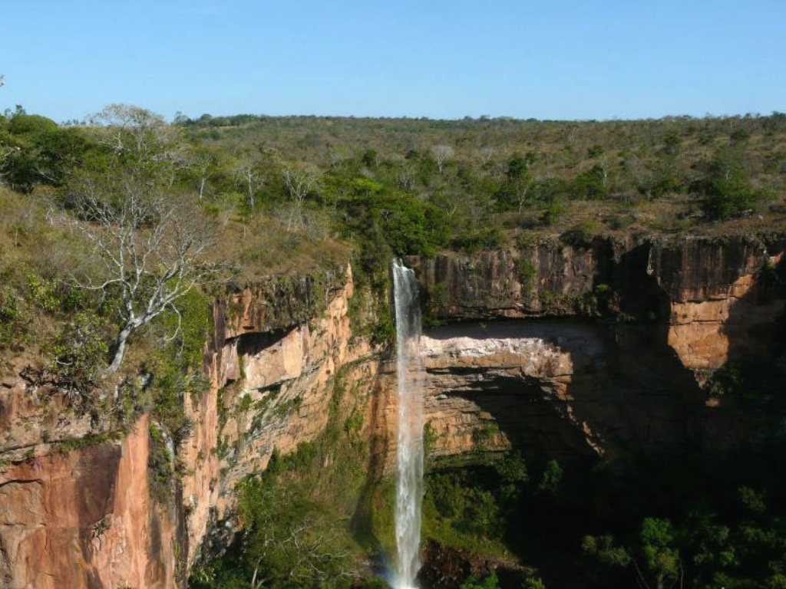

O Mato Grosso é um estado localizado na região Centro-Oeste do Brasil, conhecido por sua enorme produção agropecuária. Sua capital é Cuiabá. O estado abriga o Pantanal, uma das maiores planícies alagáveis do mundo, e a Chapada dos Guimarães. A economia mato-grossense é liderada pela agropecuária, com destaque para a soja, o milho, o algodão e a pecuária de corte.

Voltar